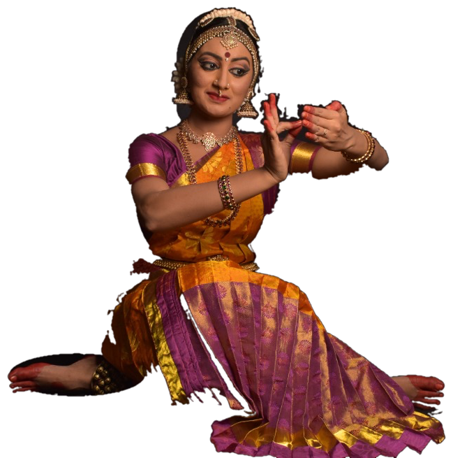
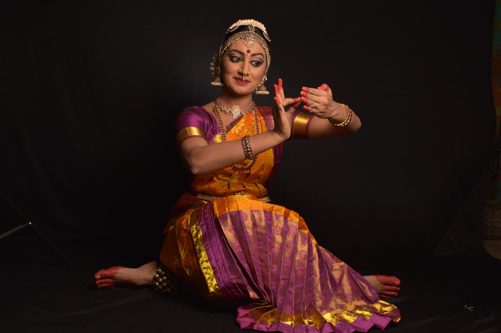
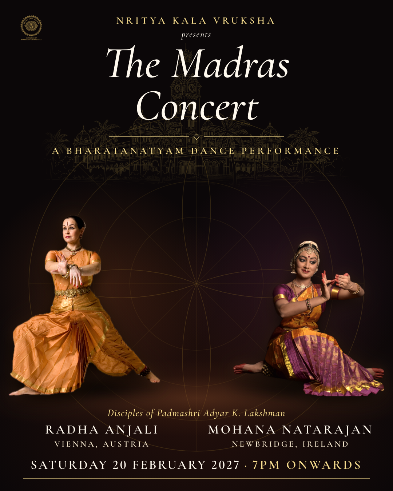

Mohana Natarajan
Bridging twenty years of classical South Indian dance with mindful breathwork, alignment, and Vedic philosophy. Classes for children, teens, and adults in Leixlip, Newbridge, and Online.

What We Offer
Structured training under Nritya Kalā Vrukṣa covering foundational Adavus, pure rhythmic geometry (Nritta), expressive storytelling (Abhinaya), and full classical Margam repertoire. Held at Leixlip Community Centre, Newbridge, and live online.
Holistic movement conditioning rooted in the Krishnamacharya Yoga Mandiram (KYM) tradition—synchronizing breath with posture, structural alignment, and injury prevention for dancers and everyday practitioners.
Authorized instruction in traditional Vedic mantra recitation—focusing on authentic Sanskrit phonetics, intonation rules (Svara), breath control, and meditative vocal resonance.
Solo and ensemble classical recitals, festival showcases, school lecture-demonstrations across Ireland, and therapeutic movement sessions.

Lineage & Journey
Disciple of Padmashri Adyar K. Lakshman & Smt. Induvadana
Initiated and trained in the classical Adyar Bani of Bharatanatyam, followed by advanced training at the Bharatha Choodamani Academy of Fine Arts (2009–2017) and engagement with the historic Kalakshetra Foundation.
University of Madras & Krishnamacharya Yoga Mandiram
Earned a Master of Arts (M.A.) in Bharatanatyam and B.Com from the University of Madras, alongside a Post Graduate Diploma in Yoga Teacher Training and Vedic Chanting authorization at Krishnamacharya Yoga Mandiram (KYM).
ICCR Representative & Movement Therapy
Selected by the Indian Council for Cultural Relations (ICCR) at the Embassy of India in Phnom Penh. Conducted workshops at the Royal University of Fine Arts and led dance therapy for children with neurodevelopmental needs with Caritas Cambodia (CCAMH).
Artistic Director of Nritya Kalā Vrukṣa
Leading Bharatanatyam, Yoga, and Vedic Chanting classes across Ireland while curating international concert collaborations and festival showcases.

The Madras Concert
An evening evoking the spirit of 1980s Madras through solo and duet repertoire by Padmashri Adyar K. Lakshman and Kalanidhi Narayanan, featuring Prof. Dr. Radha Anjali (Vienna) and Mohana Natarajan.